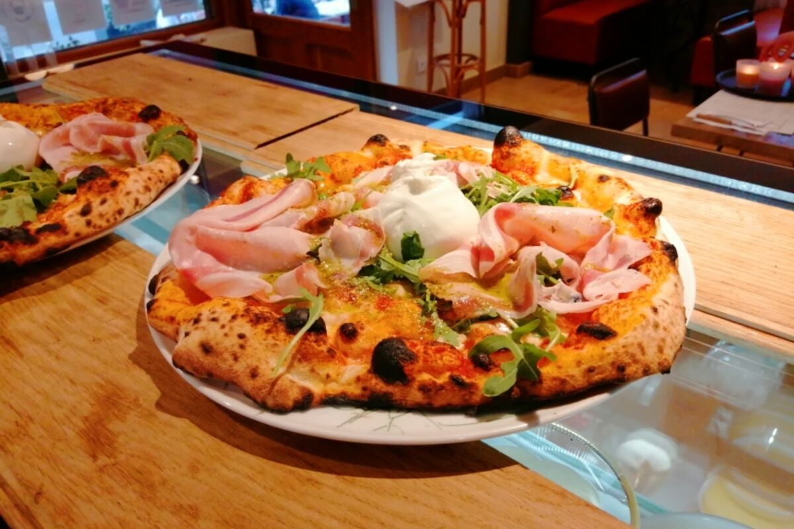
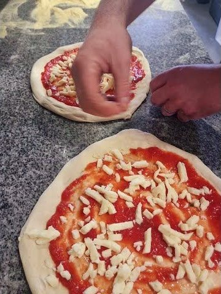

TripAdvisor
4,2/5
Une note construite sur la durée, qui récompense la constance de la cuisine et de l’accueil.
Lire les avis
Pizzeria · Café · Bar — Buxy
Des pizzas généreuses, des produits d’origine italienne et une maison ouverte du matin au soir, sur la place de la Gare à Buxy.
Ouvert mardi–dimanche

La maison
Sur la place de la Gare, la pizzeria et le café se répondent. On y vient pour une pizza, un déjeuner rapide, un café en terrasse ou une soirée entre amis.
La maison cultive une idée simple : des pizzas de tradition napolitaine, des produits d’origine italienne et une ambiance à la fois moderne et rétro. La carte est courte, les assiettes généreuses, et l’accueil se veut sans façon.
« Pizza de tradition napolitaine, produits d’origine italienne, ambiance moderne et rétro. »
— La maison
Galerie
Quelques images de la salle, de la terrasse et de nos pizzas. La suite se passe à table.
Ils en parlent
Les avis publics sont une photo à un instant donné. Merci à toutes les personnes qui prennent le temps de partager leur passage.
4,2/5
Une note construite sur la durée, qui récompense la constance de la cuisine et de l’accueil.
Lire les avis4,5/5
Les clients saluent les pizzas, la gentillesse de l’équipe et la facilité d’accès sur la place de la Gare.
Voir sur GoogleRéférencé
Le Gault&Millau référence la maison pour ses pizzas, ses salades et ses charcuteries italiennes.
Voir la ficheNotes publiques relevées en novembre 2026. Elles peuvent évoluer.
Horaires
Le café et le bar sont ouverts en continu. La cuisine vous accueille le midi et le soir.
| Lundi | Fermé |
|---|---|
| Mardi | 08:30 – 22:45Cuisine 12:00–13:30 · 18:30–21:00 |
| Mercredi | 08:30 – 22:45Cuisine 12:00–13:30 · 18:30–21:00 |
| Jeudi | 08:30 – 22:45Cuisine 12:00–13:30 · 18:30–21:00 |
| Vendredi | 08:30 – 23:00Cuisine 12:00–13:30 · 18:30–21:30 |
| Samedi | 15:30 – 23:00Cuisine 18:30–21:30 |
| Dimanche | 15:30 – 22:30Cuisine 18:30–21:00 |
Horaires susceptibles d’évoluer les jours fériés. Pour une réservation de groupe, appelez-nous.
Nous trouver
Une envie de pizza ?
Commandez à emporter.
Réservation
Réservez par téléphone ou envoyez-nous une demande. Nous confirmons toujours par téléphone.
Appeler le restaurant 03 58 93 36 13Pour les groupes de plus de 8 personnes et les événements privés, appelez-nous directement.
Questions fréquentes
Une question qui n’est pas ici ? Appelez-nous, on vous répond avec plaisir.
03 58 93 36 13Au 2 place de la Gare, à Buxy (71390), entre Chalon-sur-Saône et Cluny.
Du mardi au vendredi de 8 h 30 à 22 h 45 (23 h le vendredi), le samedi de 15 h 30 à 23 h et le dimanche de 15 h 30 à 22 h 30. Fermé le lundi. La cuisine est ouverte le midi et le soir.
Oui, les pizzas, salades et desserts sont disponibles à emporter. Commandez au 03 58 93 36 13.
C’est recommandé, surtout le week-end. Appelez-nous au 03 58 93 36 13 ou envoyez une demande via le formulaire de réservation.
Oui, la maison dispose de deux salles. Contactez-nous pour organiser votre repas de groupe, anniversaire ou événement privé.
Carte bancaire (Visa, Mastercard, Maestro), espèces, chèques, titres-restaurant, chèques-vacances et virement.
Oui, plusieurs pizzas sont végétariennes : Margherita, Végétarienne, 4 Fromages, Provolone, Chèvre Miel et Quattro. Elles sont signalées par un V sur la carte.
La liste des allergènes est disponible sur demande en salle. Signalez-nous toute allergie lors de votre réservation ou de votre commande.